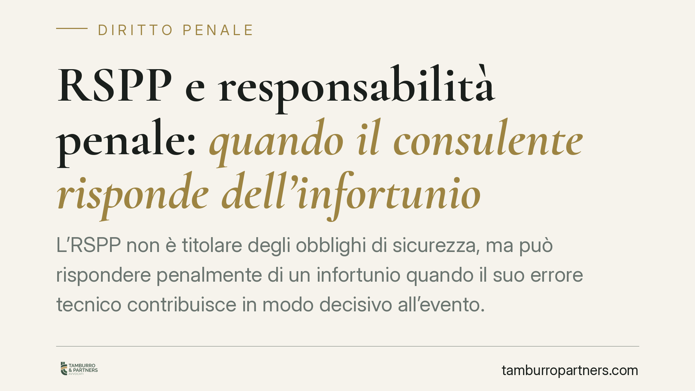

RSPP e responsabilità penale: quando il consulente risponde dell'infortunio
L'RSPP non è titolare degli obblighi di sicurezza, ma può rispondere penalmente di un infortunio quando il suo errore tecnico contribuisce in modo decisivo all'evento. La giurisprudenza di legittimità ha chiarito i confini di questa responsabilità, legandola alla concreta evitabilità del danno e alla qualità della valutazione dei rischi. Ecco cosa serve sapere.

Il ruolo dell'RSPP: consulente, non garante
Il Responsabile del Servizio di Prevenzione e Protezione (RSPP) è la figura che, ai sensi dell'art. 33 del D.Lgs. 81/2008, affianca il datore di lavoro nell'individuazione e nella valutazione dei rischi, nell'elaborazione delle misure di prevenzione e nella predisposizione dei programmi di formazione.
Il punto decisivo è che l'RSPP svolge una funzione consultiva, non gestionale. Non è titolare degli obblighi di sicurezza né dispone di poteri di spesa o di intervento diretto sull'organizzazione aziendale. La titolarità degli obblighi prevenzionistici resta in capo al datore di lavoro, che non può delegarli all'RSPP.
Questa distinzione non esclude però la responsabilità penale del consulente. L'art. 40, comma 2, c.p. sancisce che non impedire un evento che si ha l'obbligo giuridico di impedire equivale a cagionarlo; l'art. 43 c.p. definisce il reato colposo. Su questa base la giurisprudenza riconosce che l'RSPP può concorrere nel reato di lesioni o omicidio colposo quando il suo contributo tecnico è carente e influisce sul verificarsi dell'infortunio.
Inquadramento normativo: il DVR deve essere concreto
Il Documento di Valutazione dei Rischi (DVR) è il fulcro dell'intero sistema. L'art. 29 del D.Lgs. 81/2008 disciplina le modalità di effettuazione della valutazione dei rischi e impone che questa sia riferita alle specifiche lavorazioni svolte in azienda.
Da qui un principio consolidato nella giurisprudenza di legittimità: il DVR non può essere un documento standardizzato, copiato da modelli generici o avulso dalla realtà produttiva. Deve essere concreto, operativo e aggiornato rispetto ai rischi effettivamente presenti. Un DVR formale ma inadeguato è, ai fini della responsabilità, come un DVR mancante.
Quando l'RSPP collabora alla redazione di un documento inadeguato, o non segnala una lacuna tecnica che era in grado di rilevare, il suo apporto professionale entra nella catena causale dell'evento.
Le tre ipotesi tipiche di colpa
La responsabilità penale dell'RSPP si concentra, nella prassi, su tre situazioni ricorrenti:
- Errore tecnico nella valutazione. L'RSPP sottovaluta o classifica in modo scorretto un rischio che la sua competenza gli imponeva di cogliere.
- DVR carente o standardizzato. Il documento non rispecchia le reali condizioni di lavoro, in violazione dell'art. 29 D.Lgs. 81/2008.
- Mancata segnalazione di un rischio. L'RSPP individua una criticità ma omette di comunicarla al datore di lavoro, privandolo dell'informazione necessaria a intervenire.
Il nodo del nesso causale: l'evento doveva essere evitabile
L'affermazione della responsabilità non si ferma all'errore. Occorre dimostrare che quell'errore ha causato l'evento. Qui opera il giudizio controfattuale: l'RSPP risponde solo se la condotta doverosa che ha omesso — la segnalazione corretta, la valutazione adeguata — avrebbe, con elevata probabilità, evitato l'infortunio.
Se l'evento si sarebbe comunque verificato anche con una condotta ineccepibile, il nesso causale viene meno e la responsabilità non sussiste. Questo requisito, definito causalità della colpa, è il principale argine contro un'automatica estensione di responsabilità al consulente.
Va inoltre considerato il possibile concorso colposo di altri soggetti — in primo luogo il datore di lavoro — e l'eventuale condotta imprudente del lavoratore, che il giudice valuta nella ricostruzione complessiva della vicenda.
Implicazioni pratiche per i soggetti coinvolti
Per l'RSPP il messaggio è netto: la qualità tecnica del lavoro svolto è anche una tutela personale. Un'analisi dei rischi superficiale espone a un rischio penale concreto. Per il datore di lavoro, la presenza di un RSPP non attenua i propri obblighi, che restano pieni e indelegabili. Per i lavoratori, un DVR effettivo è la prima garanzia di sicurezza sostanziale.
Cosa fare in concreto
- Redigere un DVR specifico. Ancorare la valutazione alle reali lavorazioni aziendali, evitando modelli generici in linea con l'art. 29 D.Lgs. 81/2008.
- Documentare ogni segnalazione. Comunicare per iscritto al datore di lavoro i rischi rilevati, con data certa.
- Aggiornare periodicamente il documento. Rivedere il DVR a fronte di nuove lavorazioni, macchinari o modifiche organizzative.
- Formalizzare i rapporti con il datore. Verbalizzare riunioni e indicazioni tecniche, così da ricostruire con precisione i rispettivi ruoli.
- Conservare le prove dell'attività svolta. Archiviare comunicazioni, report e aggiornamenti: in sede penale, documentare la diligenza è decisivo.
Disclaimer
Contributo informativo a cura di Tamburro & Partners - Avv. Giuseppe Tamburro. Non costituisce parere legale.
Ogni condominio ha una storia a sé.
Se gestisci un'amministrazione e vuoi un confronto su una specifica questione condominiale, scrivi allo studio. Ti rispondiamo entro un giorno lavorativo.